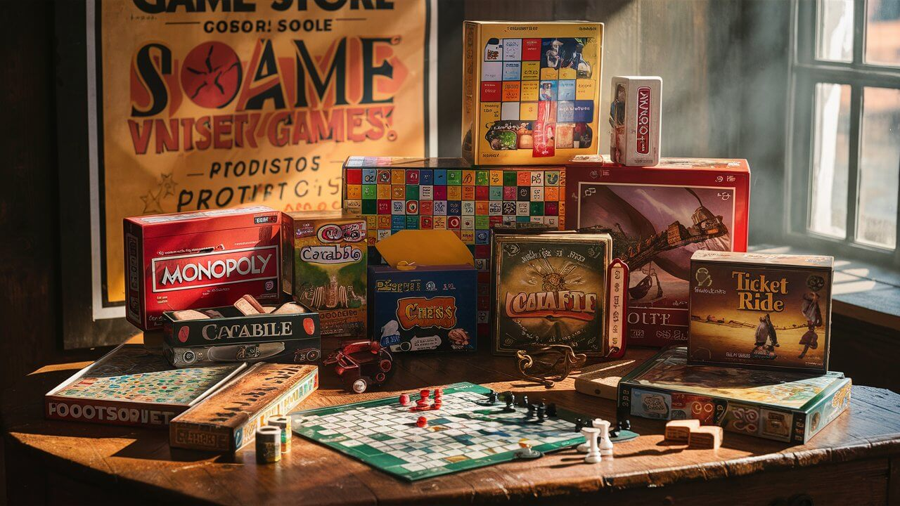
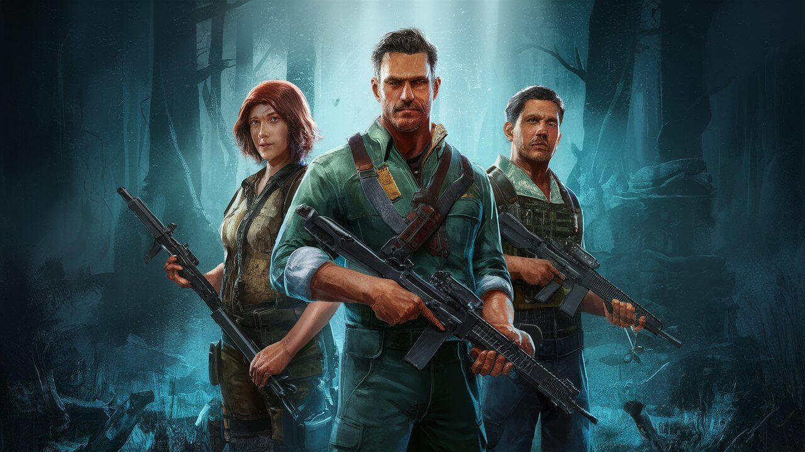
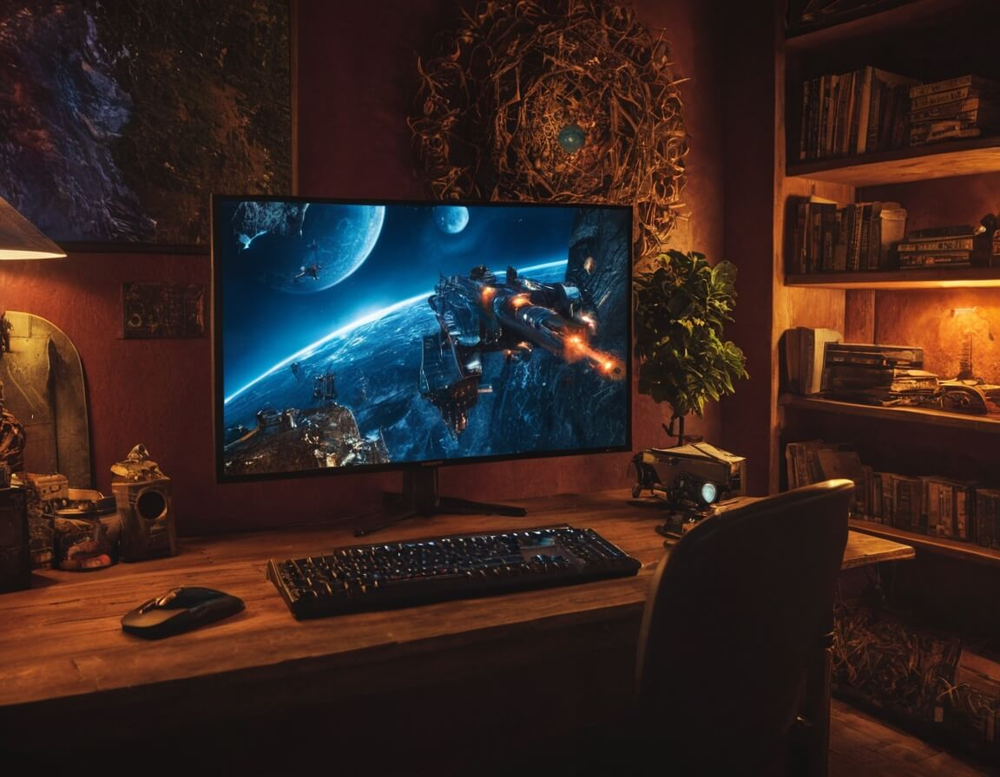

Análises Profundas e Imparciais de Jogos de Computador: Da Primeira Sessão à Estratégia Final
 No QuestCritics, oferecemos análises minuciosas e
objetivas de jogos de computador, acompanhando cada
detalhe desde os primeiros momentos de jogabilidade até
as estratégias finais. Nossa equipe de especialistas se
dedica a avaliar todos os aspectos dos jogos, garantindo
que você receba uma visão completa e honesta para suas
decisões de compra e jogatina. Venha explorar conosco o
universo dos jogos e descubra quais títulos merecem seu
tempo e dedicação!
No QuestCritics, oferecemos análises minuciosas e
objetivas de jogos de computador, acompanhando cada
detalhe desde os primeiros momentos de jogabilidade até
as estratégias finais. Nossa equipe de especialistas se
dedica a avaliar todos os aspectos dos jogos, garantindo
que você receba uma visão completa e honesta para suas
decisões de compra e jogatina. Venha explorar conosco o
universo dos jogos e descubra quais títulos merecem seu
tempo e dedicação!
Cada jogo tem suas particularidades, e no QuestCritics, nossa missão é desvendá-las para você. Analisamos gráficos, mecânicas de jogo, histórias, trilhas sonoras e muito mais. Quer saber se aquele novo lançamento realmente vale a pena? Ou está procurando um clássico que você possa ter perdido? Nossa equipe está aqui para fornecer as respostas e insights necessários para guiar sua jornada no mundo dos jogos de computador. 
 No QuestCritics, valorizamos a autenticidade. Nossas análises são baseadas em horas reais de jogo, testando cada título exaustivamente para oferecer uma perspectiva genuína. Não nos contentamos apenas com as primeiras impressões – exploramos até os menores detalhes e desafios, para que você saiba exatamente o que esperar. Seja para jogos indie ou grandes produções, nossas avaliações são fundamentadas na experiência real dos jogadores.
Além das análises detalhadas, QuestCritics é também uma comunidade vibrante de entusiastas de jogos. Participe de discussões, compartilhe suas opiniões e descubra novas recomendações através de nossas redes sociais e fóruns. Aqui, sua paixão por jogos encontra um espaço onde é valorizada e onde você pode conectar-se com outros jogadores que compartilham o mesmo entusiasmo. Com o QuestCritics, você nunca está sozinho na sua aventura pelos mundos virtuais.
Análises de Jogos de Ação: Intenso e Cheio de Adrenalina
Mergulhe nas batalhas mais intensas e cheias de adrenalina com nossas análises detalhadas de jogos de ação. No QuestCritics, avaliamos cada explosão, cada combate corpo a corpo e cada momento de suspense para garantir que você tenha uma experiência de jogo emocionante. Descubra os melhores títulos que oferecem gráficos impressionantes, jogabilidade fluida e histórias envolventes que vão manter você na ponta da cadeira.

Avaliações de RPG: Mundos Fantásticos e Histórias Épicas
Explore mundos fantásticos e histórias épicas com nossas avaliações de RPG no QuestCritics. Analisamos profundamente a construção do mundo, o desenvolvimento dos personagens, e as complexas tramas que fazem desses jogos uma experiência inesquecível. Quer saber qual RPG oferece a melhor narrativa ou as mais emocionantes missões? Nossos especialistas estão aqui para guiá-lo através dos melhores jogos de RPG disponíveis.

Revisões de Jogos de Estratégia: Planejamento e Execução Perfeita
Desafie sua mente e suas habilidades de planejamento com nossas revisões de jogos de estratégia. No QuestCritics, exploramos cada detalhe tático, desde a gestão de recursos até a execução de estratégias complexas em tempo real ou por turnos. Descubra quais jogos de estratégia oferecem a melhor profundidade, replayability e desafios que irão mantê-lo engajado por horas. Nossa equipe garante que você tenha todas as informações necessárias para dominar o campo de batalha virtual.
Junte-se à QuestCritics: Conecte-se com uma Comunidade de Gamers Apaixonados
Venha fazer parte da QuestCritics e conecte-se com uma comunidade vibrante de entusiastas de jogos de computador. Aqui, você encontrará pessoas que compartilham a mesma paixão pelos jogos, prontas para discutir, debater e trocar experiências sobre os mais variados títulos. Seja para encontrar dicas, compartilhar suas opiniões ou descobrir novos jogos, nossa comunidade é o lugar ideal para gamers dedicados. Participe agora e transforme sua experiência de jogo!
Avaliação da jogabilidade


Mantenha-se Atualizado: Fique por Dentro das Últimas Novidades e Tendências dos Jogos de Computador
Saiba mais
No QuestCritics, garantimos que você esteja sempre atualizado com
as últimas notícias e tendências do universo dos jogos de
computador. Nossa equipe está constantemente explorando novos
lançamentos, atualizações e tendências emergentes para trazer a
você as informações mais recentes e relevantes. Não perca nada do
que acontece no mundo dos jogos – acompanhe nosso site para estar
sempre à frente e bem informado!
Novidades em Destaque: Explore os Últimos Lançamentos
Fique por dentro dos lançamentos mais recentes com nossa seção de novidades em destaque. No QuestCritics, trazemos as informações mais atuais sobre novos jogos de computador que estão movimentando o mercado. Descubra os títulos mais esperados, as atualizações mais recentes e o que há de mais inovador no mundo dos games. Não perca nenhum lançamento importante – mantenha-se atualizado conosco!
Tendências de Jogos: O Que Está Em Alta Agora
Explore as tendências mais quentes do universo dos jogos com nossa análise detalhada. No QuestCritics, analisamos as últimas tendências que estão moldando o cenário dos jogos de computador. Desde novas mecânicas até inovações tecnológicas, nossa seção de tendências oferece uma visão aprofundada das mudanças e evoluções mais importantes no setor. Esteja sempre à frente e descubra o que está ganhando destaque no mundo dos jogos.

Notícias de Última Hora: Acompanhe os Eventos e Atualizações Mais Recentes
Mantenha-se informado sobre os eventos e atualizações mais recentes com nossa cobertura de notícias de última hora. No QuestCritics, você encontrará todas as informações essenciais sobre eventos importantes no mundo dos jogos, incluindo lançamentos, atualizações e anúncios exclusivos. Acompanhe nosso site para não perder nenhuma novidade e estar sempre atualizado com o que está acontecendo agora no universo dos games.

Aproveite o Acesso Completo: Explore Todos os Nossos Recursos e Mantenha-se Atualizado com as Últimas Notícias sobre Jogos de Computador
No QuestCritics, você tem acesso total a uma gama completa de recursos dedicados aos jogos de computador. Explore nossas análises detalhadas, artigos informativos e atualizações constantes para estar sempre por dentro das últimas notícias e tendências do universo dos games. Aproveite nosso conteúdo exclusivo e mantenha-se atualizado com tudo o que está acontecendo no mundo dos jogos, direto de uma fonte confiável e especializada.
Ação / Aventura
Autor: João Silva
Shadow Legends
Shadow Legends leva você a um mundo sombrio e imersivo onde você enfrenta inimigos ameaçadores e desvenda segredos antigos. Com uma jogabilidade intensa, gráficos de última geração e uma narrativa envolvente, este título combina combate rápido com uma trama rica. Descubra o que faz de Shadow Legends uma experiência de ação e aventura inesquecível.
RPG / Fantasia
Autor: Maria Costa
Eldritch Realms
Em Eldritch Realms, você embarca em uma jornada épica através de um mundo mágico repleto de mistérios e perigos. Este RPG oferece um sistema de criação de personagens detalhado, missões desafiadoras e uma história profunda que se desenrola com cada escolha sua. Explore masmorras antigas e batalhe contra criaturas míticas enquanto constrói seu próprio destino.
Estratégia / Tática
Autor: Pedro Lima
Tactical Frontlines
Tactical Frontlines oferece uma experiência de estratégia tática onde você deve coordenar suas tropas e planejar cada movimento com precisão. O jogo apresenta mapas detalhados e um sistema de combate que recompensa a estratégia cuidadosa. Teste suas habilidades de planejamento em batalhas intensas e conquiste a vitória através da astúcia e da habilidade.

Simulação / Sandbox
Autor: Ana Pereira
City Builder Pro
Com City Builder Pro, você assume o controle de uma cidade em crescimento e tem a liberdade de moldar seu destino. Este jogo de simulação permite que você construa e gerencie todos os aspectos da sua cidade, desde a infraestrutura até os serviços públicos. Experimente o desafio de equilibrar orçamento, atender às necessidades dos cidadãos e expandir sua metrópole em um ambiente sandbox altamente interativo.

Entre para a Comunidade QuestCritics: Onde Gamers se Reúnem
Junte-se à comunidade QuestCritics e conecte-se com outros gamers que compartilham sua paixão por jogos de computador. Em nosso espaço, você pode participar de discussões animadas, obter recomendações personalizadas e compartilhar suas próprias análises e experiências de jogo. Seja você um veterano ou um novato no mundo dos jogos, aqui você encontrará um grupo acolhedor e informado que valoriza cada momento de jogatina. Venha se juntar a nós e leve sua experiência de jogo ao próximo nível!